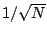
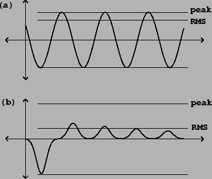
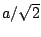
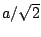

The most fundamental property of a digital audio signal is its
amplitude. Unfortunately, a signal's amplitude has no one canonical
definition.
Strictly speaking, all the samples in a digital audio signal are themselves
amplitudes, and we also spoke of the amplitude  of the sinusoid as a whole.
It is useful to have measures
of amplitude for digital audio signals in general. Amplitude
is best thought of as applying to a
window, a fixed range of samples of the signal. For instance, the
window starting at sample
of the sinusoid as a whole.
It is useful to have measures
of amplitude for digital audio signals in general. Amplitude
is best thought of as applying to a
window, a fixed range of samples of the signal. For instance, the
window starting at sample  of length
of length  of an audio signal
of an audio signal  consists of the
samples,
consists of the
samples,
The RMS amplitude of a signal may equal the peak amplitude but never exceeds it; and it may be as little as  times the peak amplitude, but never less than that.
|  |
Under reasonable conditions--if the window contains at least several periods and
if the angular frequency is well under one radian per sample--the peak
amplitude of the sinusoid of Page  is approximately
is approximately  and its RMS amplitude
about . Figure 1.2 shows the peak and RMS amplitudes
of two digital audio signals.
and its RMS amplitude
about . Figure 1.2 shows the peak and RMS amplitudes
of two digital audio signals.